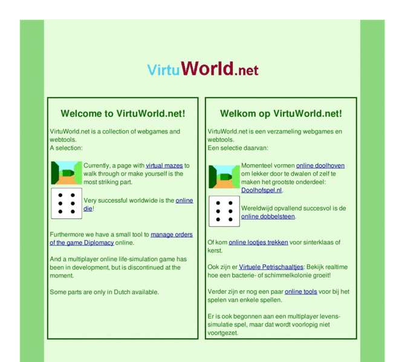

Previewing: VirtuWorld.net Previewing: VirtuWorld.net 
Use the left/right red arrow controls to navigate through this ring - Click the preview image to visit the member site.

VirtuWorld.net is a portal for own developed webgames. With currently as most important part: virtual mazes to walk through.
VirtuWorld.net owned by:
 zilver zilver
A member of the original webring since 03/07/2006.
|
|